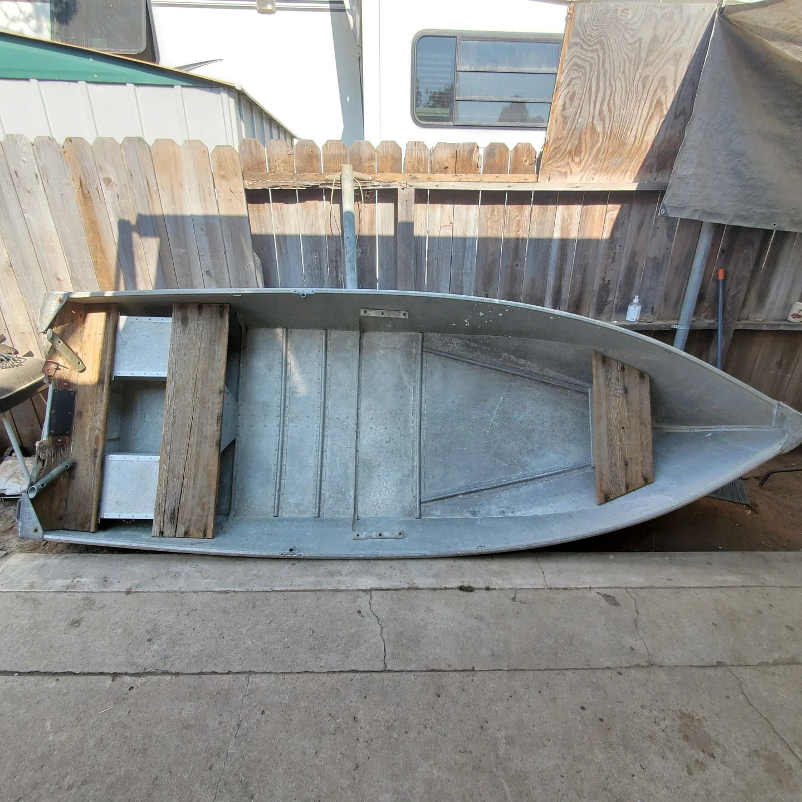
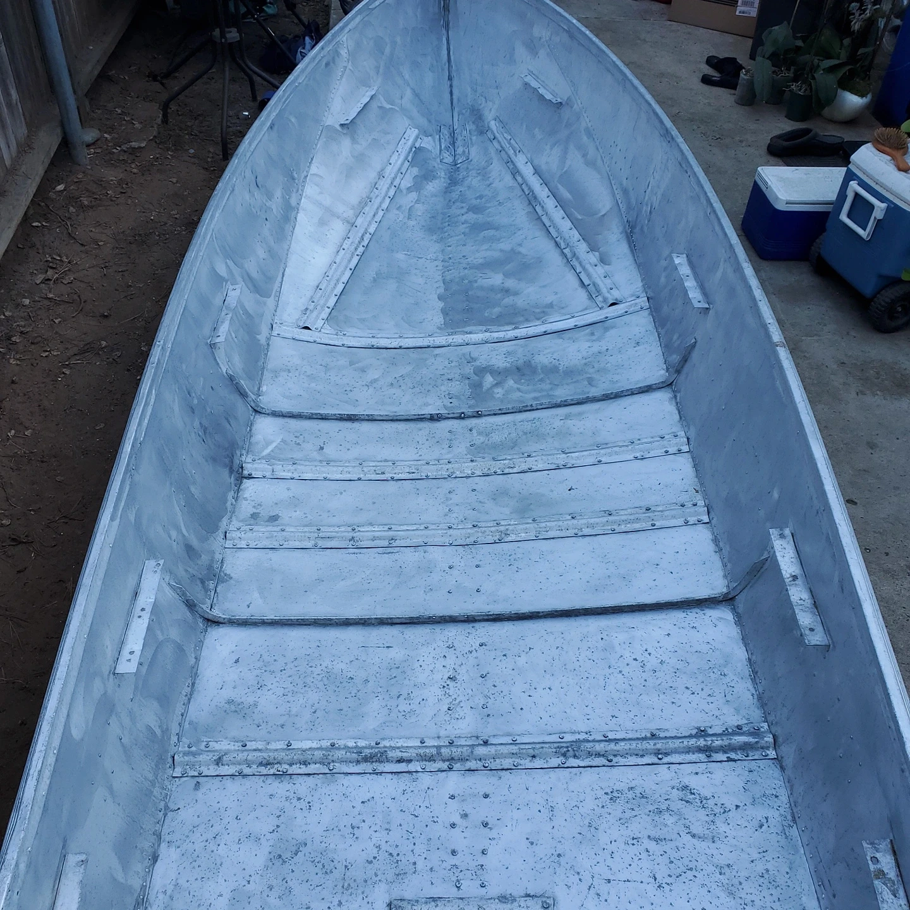
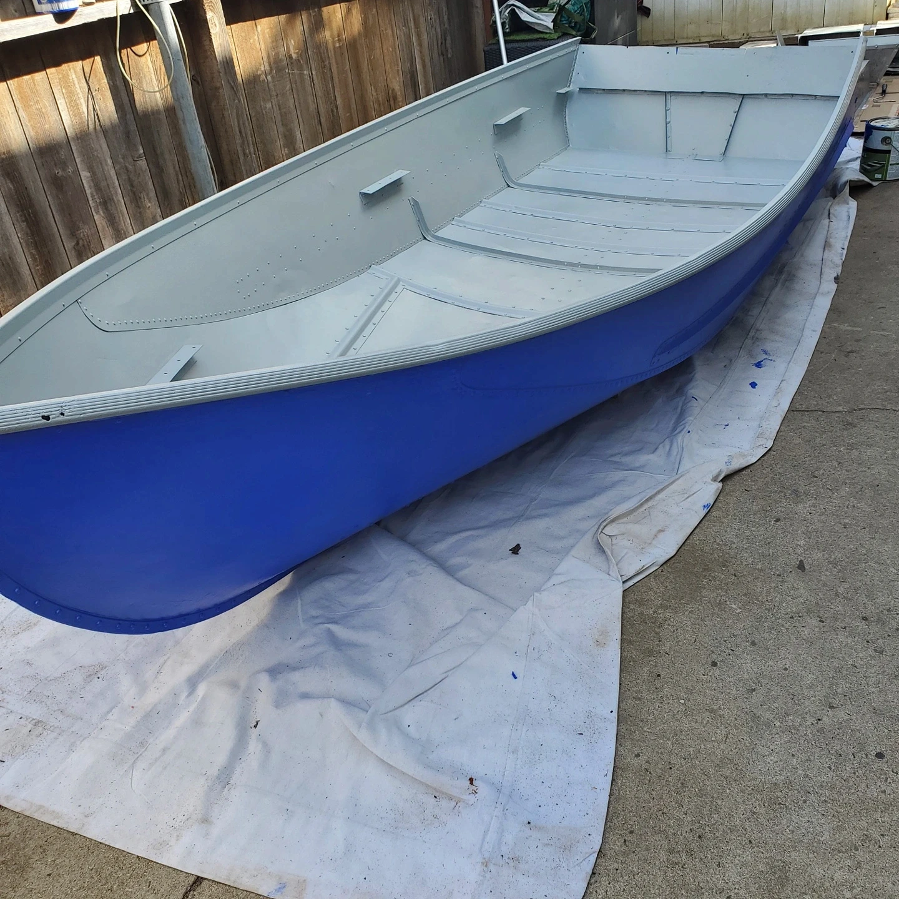
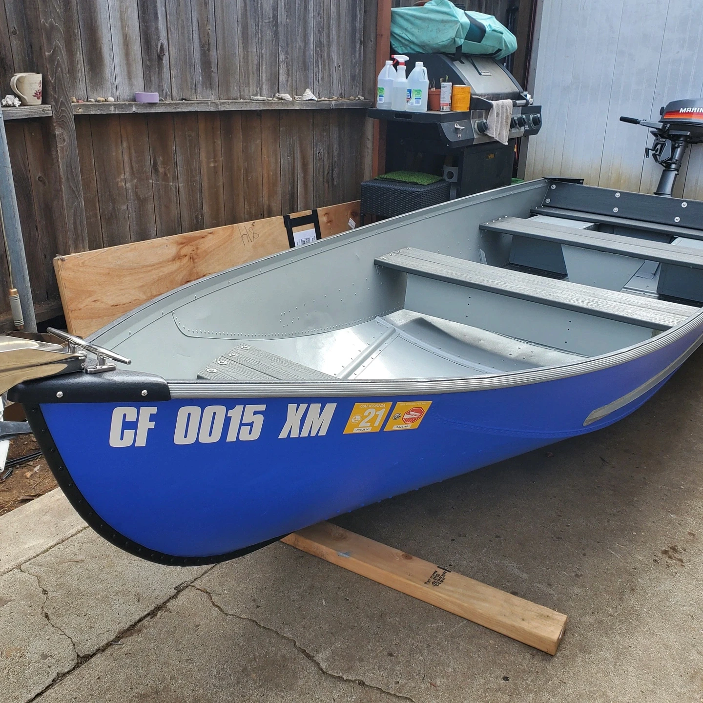
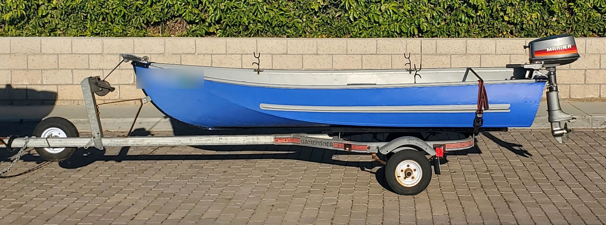

Rejuvenating an Old Aluminum Fishing Boat
Restoring a weathered 12-foot fishing boat with durable materials, modern upgrades, and a fresh ocean-rated finish for new adventures on the water.
Initial Condition and Acquisition:
I stumbled upon a 12-foot old aluminum flat-bottom fishing boat that, despite its worn condition and lack of paperwork or motor, offered a perfect restoration opportunity. It came with rotted wooden benches and a transom, but its hull was fundamentally sound. The boat was a gift from an individual who had owned it for many years but no longer wanted it.
Restoration Process:
Disassembly and Cleaning:
I began by removing the rotten wood, the aluminum brackets, and the aluminum boxes underneath the benches which contained flotation foam.
After dismantling, I thoroughly cleaned all parts with an aluminum restoration cleaner to prepare them for restoration.
Sealing and Painting:
I applied ocean-rated epoxy on all seams and existing rivets to seal the hull effectively.
After priming with etching primer, I painted the exterior blue with a grey trim and the interior grey with a black textured trim, using paints specifically rated for ocean use on aluminum.
Reconstruction and Hardware Upgrades:
I reconstructed the aluminum boxes using new angled aluminum and rivets, ensuring everything was sealed externally with epoxy.
I replaced the wooden benches and transom with dark grey vinyl plank wood designed for decking, chosen for its durability and resistance to rot.
All new stainless steel hardware was used to secure the components, enhancing the boat's durability against water exposure.
Functional Enhancements:
I installed new ore brackets that doubled as fishing pole holders and added a stainless steel cleat and anchor roller to the bow for easy anchoring.
At the stern, I covered the existing handles with grip tape for better handling and installed an elastic rope system for securing the boat to docks.
Motor and Accessories:
I outfitted the boat with a 5hp two-stroke Mercury outboard motor that I had previously serviced. Despite its age, the motor ran excellently.
I equipped the boat with essential safety and operational gear, including oars, a fire extinguisher, life vests, and a waterproof box for registration papers.
Trailer and Registration:
The boat was paired with a refurbished used trailer, complete with new tail lights and wiring.
After restoring the boat, I successfully registered it with the DMV, applying the required identification numbers on the bow.
Conclusion:
The restoration transformed the boat into an ideal vessel for leisure fishing and short excursions around lakes and calm sea areas. With a 500lb weight limit and efficient motor, it was perfectly suited for two people. The project not only revitalized an old boat but also equipped it with modern, durable materials and a fresh look. Ultimately, I sold the boat to an enthusiast who was eager to enjoy many peaceful days on his local lake.





